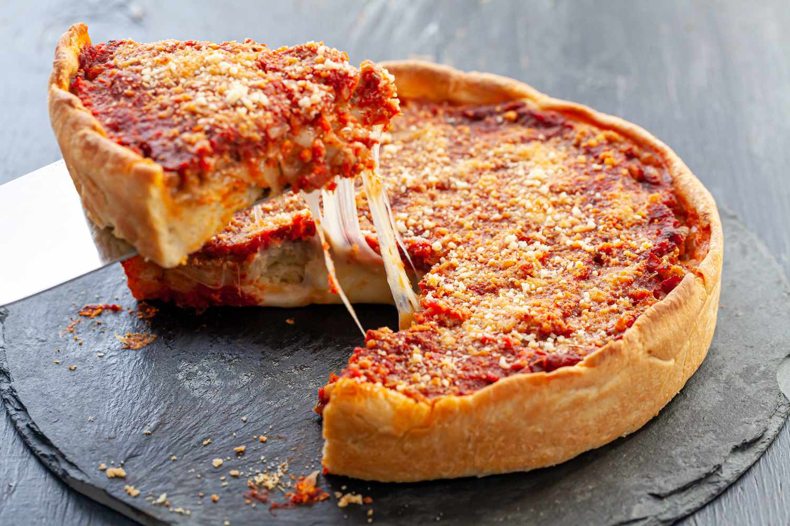

Chicago-Style Deep Dish Pizza with Italian Sausage

Chicago-style deep dish pizza is not your everyday pizza fare. This thick pie with buttery, crisp crust is filled to the max with oozy cheese and crumbled sausage and then topped with a slightly sweet and spicy tomato sauce and even more cheese. By most accounts invented in Chicago (thus the name) this deep-dish version fulfills hungry pizza cravings in a most satisfying way!
The dough is layered with butter, rolled and fitted into a cake pan. The high-sided crust makes room for a substantial amount of filling. To create its buttery flavor and light crust you laminate the dough and give it an extra rise.
Laminate means to create alternate thin layers of butter and dough (think croissants or puff pastry.) While those pastries require folding, rolling, and folding again a few times over, in this simplified version, all you do is spread a layer of softened, room temperature butter over the dough and roll it into a cylinder, creating layers. Easy enough, right? The dough gets another rest in the refrigerator to maintain the layers, to rise slightly, and to allow the butter to become firm. Then it is rolled out into a circle and pressed into the pan.
The assembly of a Chicago-style deep-dish pizza is a bit different, too. You start with a layer of mozzarella cheese slices on the bottom not the top! This keeps the crust crisp and allows the cheese to melt and ooze to the max. Top it with crumbled, cooked sausage (or other fillings of your choice) and spread the sauce on top not the bottom! Sauce on top keeps the crust from becoming soggy. Sprinkle with Parmesan and your pie is ready to go into the oven. That thick sauce holds the pie together when you slice it, and the cheese on the bottom oozes just a little on the plate.
Ingredients
For the dough
- 2 cups all-purpose flour
- 2 tablespoons yellow cornmeal
- 3/4 teaspoon salt
- 1 1/4 teaspoons instant yeast
- 1 teaspoon sugar
- 1 teaspoon olive oil
- Flour (for rolling the dough)
- 2 tablespoons unsalted butter, softened at room temperature
- Vegetable oil spray (for the cake pan)
For the filling
- 1 pound sweet or hot Italian sausage, casings removed, or bulk Italian sausage
- 8 ounces sliced mozzarella cheese
- 1/4 cup grated Parmesan (for the top of the pie)
For the sauce
- 1 tablespoon unsalted butter
- 1/2 small onion, finely chopped
- 2 cloves garlic, finely chopped
- 1 1/2 teaspoons dried oregano
- 1 teaspoon dried rosemary
- Pinch or two red pepper flakes
- 1 can (28 ounces) crushed tomatoes, or whole tomatoes crushed in a bowl
- 1/4 teaspoon salt
- 1 teaspoon sugar
Steps
- Mix the dough in the bowl of a stand mixer fitted with the paddle attachment on low speed, mix the flour, corn meal, salt, yeast and sugar until blended. Add 1/2 cup plus 2 tablespoons room temperature water and mix until combined. If the dough seems dry, add an additional tablespoon or two of water. The dough should feel soft and very slightly sticky, not stiff or dry.
- Switch to the dough hook and knead the dough on low speed for 5 to 7 minutes, or until it is smooth and elastic. Drizzle 1 teaspoon olive oil in a clean bowl. Form the dough into a ball and place it in the bowl, turning to coat all over with oil. Cover with plastic wrap and let rise for 1 hour, or until puffy.
- On a lightly floured surface, roll the dough into a 9x12-inch rectangle. Spread 2 tablespoons of butter over the surface of the dough. Starting at the long side, roll the dough into a cylinder. Place the cylinder with the seam side up, press it flat, and fold the dough into thirds like a business letter. Shape into a ball and return it to the bowl. Cover with plastic and refrigerate for 45 minutes.
- In a large skillet set over medium heat, cook the sausage until no longer pink, breaking it up with a fork or rubber spatula to crumble it. Transfer to a plate lined with paper towels.
- In the same skillet you used to cook the sausage, melt the butter over medium heat. Add the onions, garlic, oregano, rosemary, and red pepper flakes. Cook, stirring, for 4 to 5 minutes or until the onions soften. Add the tomatoes, salt, and sugar to the pan, and continue to cook and stir for 3 to 4 minutes, or until the flavors blend together and the sauce thickens. Set aside to cool
- Set the oven at 425°F. Generously spray a 9x2-inch cake pan with vegetable oil.
- On a lightly floured surface, roll the dough into a 12-inch circle. Fit it into the cake pan, pressing it into the corners and up the sides of the pan. Let rest for 10 minutes. Once the dough has relaxed, press it again into the sides of the pan to keep it from shrinking when it is baked. Layer the cheese slices on the bottom, top with the cooked and crumbled sausage, and spread the sauce over the top of the pie. Sprinkle with the Parmesan cheese.
- Bake for about 25 minutes, or until the crust browns and the filling is bubbly. Remove from the oven and let rest for 10 minutes to allow the sauce to settle before gently removing it from the pan in one piece, or slice and serve it from the pan. To remove in one piece, run a knife around the circumference of the pan. Carefully slide a wide, thin spatula under the dough and lift it out of the pan. Transfer it to a large plate.
Here is the original recipe
Home